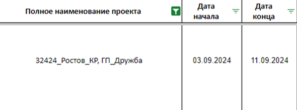
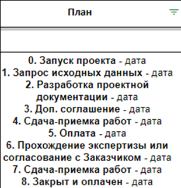
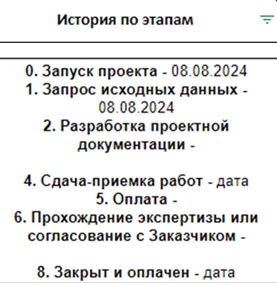
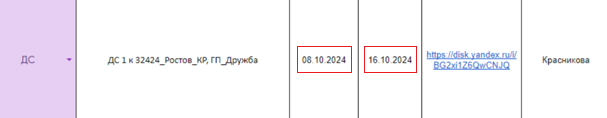
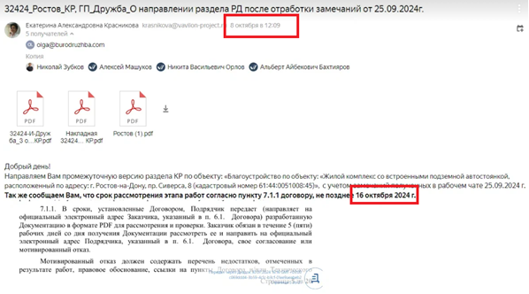
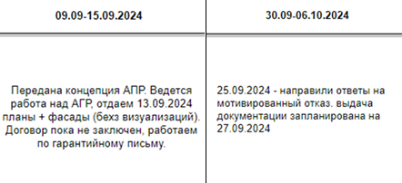

1. В колонке “Полное наименование проекта” вносится наименование проекта, которое указано в эл. письме при запуске проекта от руководителя отдела продаж (Демьянов Георгий Геннадьевич).
2. В колонках «Дата начала» и «Дата конца» вносятся даты фактического начала и конца этапа (Этапа или всего проекта?) (ГИП, МП):
3. В колонке «План» указываются плановые даты по каждому из этапов исходя из договорных сроков и БДДС (Заполняет Орлов):
4. В колонке «История по этапам» указываются фактические даты по каждому из этапов (Заполняет ГИП, МП):
5. “Обоснование сроков” – документ (письмо/скрин), который подтверждает даты, указанные в колонках “Дата начала” и “Дата конца”. Данный документ позволяет вносить изменения в вышеуказанных колонках. Изменение дат без закрепленного обоснования недопустимо:
 6. В колонке с датами указываются статусы по проекту в целом или с привязкой к дате (если в этом есть необходимость):
